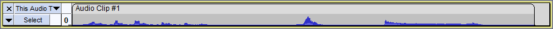

New features in this release
- Details of all the major changes since 2.2.2 can be found in Release Notes 2.3.0.
Contents
- Punch and Roll
- Movable Pinned Head
- Scrubbing always uses un-pinned playhead
- Play-at-Speed
- Batch Processing
- Macros command replaces Chains
- New Tools menu
- New Save Project menu
- Scriptables added to the Extra menu
- Nyquist effects translated
- Help Buttons
- Increased legibility of trackname display
- Half-wave option for collapsed tracks
- Sliding Stretch
- Overwriting existing projects
- Use dialog for the name of new labels
- Changed shortcuts for clip navigation
- Bug Fixes
Punch and Roll Recording
We have introduced Punch and Roll Recording into Audacity as one of our most popular and long-standing feature requests.
It is Accessed by: or more simply using its shortcut Shift + D
You can correct errors easily during the course of a recording session.
- You can stop, back up over a mistake, and continue recording, resulting in one track that eliminates the errors and is properly timed, without the use of cutting, pasting, and clip-moving commands, or mixing of multiple tracks.
- You can do rough editing as you go, with minimal interruption of your performance and less work left until afterwards.
This is likely to be very useful to voice-over artists and audiobook authors enabling them to make rapid corrections of fluffs as they progress.
See Punch and Roll Record for more details.
Movable pinned Playhead/Recordhead
We have made the pinned playhead/recordhead movable on the Timeline, enabling you to choose whereabouts on the Timeline you want it to be pinned for playback and recording
The default pinned position is the center of the Timeline as before, but you can change this by clicking on the pinned head and dragging it along the Timeline while you are playing or recording. A double-click on the head will restore it to its default position in the center of the Timeline.
You may find that a pinned Playhead/Recordhead position right of center will be more useful during recording, including Punch and Roll recording, but a position back in the middle may be more useful if you are playing.
Scrubbing and Seeking always use un-pinned playhead
By default, scrubbing and seeking will ignore the pinned playhead (if it is turned on) and will play with an unpinned playhead. This will cause the playhead to move with the waveform remaining static.
You can change this by turning "off" the option for "Always scrub unpinned" in Playback preferences. This will cause the playhead to remain static and the waveform will move under it while scrubbing and seeking.
The un-pinned head is probably the easier way to work with scrubbing and seeking.
Play-at-Speed
You can now use the Play-at-Speed Toolbar (formerly called the "Transcription Toolbar") to make dynamic changes to the playback speed as you play audio using the Play-at-Speed toolbar to set the required speed. Formerly you had to stop playback and restart it to get the changed speed.

We have made the Play-at-Speed toolbar resizable. You can stretch it by dragging the right end rightwards. You have more precision with this longer slider. We also made the Mixer toolbar resizable, to give you the option of more precision in the main volume and playback settings too.
Batch Processing
We have added a collection of features to Audacity for 2.3.0 that are related. They come from a project to improve batch processing. They are described in more detail in following sections. The project led to improved:
- Macros feature (replaces Chains), for repetitive tasks that can be done without using a scripting language.
- Scripting using a scripting language such as Python running outside Audacity.
- A new 'tools menu', and new Scriptables submenus with many new commands.
Macros command replaces Chains
We have replaced the old Chains command (for batch processing and effect automation) with an extended command. Macros can do everything that Chains did before.
- Macros can now use many more Audacity commands. Previously the commands were mostly effects. Now nearly all menu items are included.
- New commands have been created specially for batch processing, dealing with selections, labels and clips.
- We have combined the old user interfaces, so that you now can view, edit and apply your macros from the same single dialog window.

- We also simplified re-setting the parameters for commands in macros. Now double clicking on a command in a displayed chain will pop up the parameter settings dialog for that command.
- You can reduce the size and scope of the dialog by using the button. This reduced 'Macro Palette' dialog can apply macros to your project, but does not edit them.
We added a new menu item , with customizable tools.

- Some new prebuilt macros are available in Tools, and you can configure and add your own.
- Macros are bindable to key presses.
- New Nyquist Prompt in Tools with enhanced capabilities.
We have created a new submenu from the File Menu called Save Project

This replaces the former Save Project and Save Project As commands and these move into the new submenu. The Save Compressed Copy of Project... is also moved to the new submenu (it was in formerly).
Most importantly we have added a new command to that menu . This is the now the safe and recommended way to make a safety backup copy of a project as you work on it. This could serve either as a single backup copy of the project, or as one of several incremental copies of the project in the state it had at a particular date and time. Unlike "Save As..." using this command will leave your current project open enabling you to continue working on it.
New and submenus in the Extra menu
- 24 New functions in these menus
- These are likely to be particularly useful to VI users.
- Actions that are currently done by mouse that can now be done by keyboard.
- These function too are available from Macros.
Click Scriptables I and Scriptables II to learn more.
Nyquist effects translated
Nyquist effects now support translation, and the ones shipped with Audacity are translated.
Help Buttons
We added help buttons  to the Macros full and reduced dialogs, to the Export dialogs, to some error message dialogs and to some other dialogs that did not previously have them.
to the Macros full and reduced dialogs, to the Export dialogs, to some error message dialogs and to some other dialogs that did not previously have them.
Increased legibility of trackname display
Increased legibility of trackname display. the Track Name overlay now has a background.

Half-wave option for collapsed tracks
For collapsed tracks there is now an option settable in Tracks Preferences to show the upper half of the wave display only in order to show a little more detail.
- 
Sliding Stretch replace Sliding Time Scale / Pitch Shift
The effect that was formerly named "Sliding Time Scale / Pitch Shift" has been renamed to "Sliding Stretch" for this release.
This is a simple name change, no other changes have been made to the effect. The change has been made mainly to reduce verbosity in the menu along with an attempt to make the command name more meaningful.
Overwriting existing projects
In response to many user requests for this we have changed Audacity so that is now possible to overwrite pre-existing projects with or .
In doing so you will get the following warning message and please note that for safety reasons this warning cannot be turned off.

Use dialog for the name of new labels
There is a new option in Tracks Behaviors Preferences for: "Use dialog for the name of new label".
This is off by default, but when enabled creating a label will pop up a dialog box for you to enter the label name (rather than the default behavior of opening the new label itself for editing). When the dialog is closed, focus is returned to the track which was the focus before the dialog opened. This functionality is primarily provided to aid Visually Impaired users who use screen readers, but may be useful to normally sighted users too.
The shortcuts for clip navigation have been changed
- is now Alt + , - was Alt + P
- is now Alt + . - was Alt + N
Bug Fixes
We fixed over 90 bugs that were in Audacity 2.2.2, including:
- Windows: Queen Mary 1.7.1 Vamp plug-ins crash Audacity on opening Plug-in Manager - see bug #1244
- Inconsistent behavior when recording with a selection defined see bug #1839
- Ctrl + M does not open label for editing - see bug #1852
- Vertical Zoom in by clicking in the vertical Scale, or context menu, in waveform views is inconsistent see bug #1810
- Deletion of all tracks cannot be undone - see bug #1845
- Timer Record with a selection present can get a truncated recording with data loss - see bug #1851
- Duplicate shortcuts can be created - see bug #1786
- Labels longer than 260 characters are now supported - see bug #1905
- Using Spectrogram Settings in TCP or using Preferences causes Audacity to reset Project Rate to default rate in Quality Preferences - see bug #1977
- Cut Preview should play all selected/sync-locked tracks, respecting Mute/Solo during preview - see bug #231
Links
> Audacity Release Notes 2.3.0 - detailed release notes for this release of Audacity